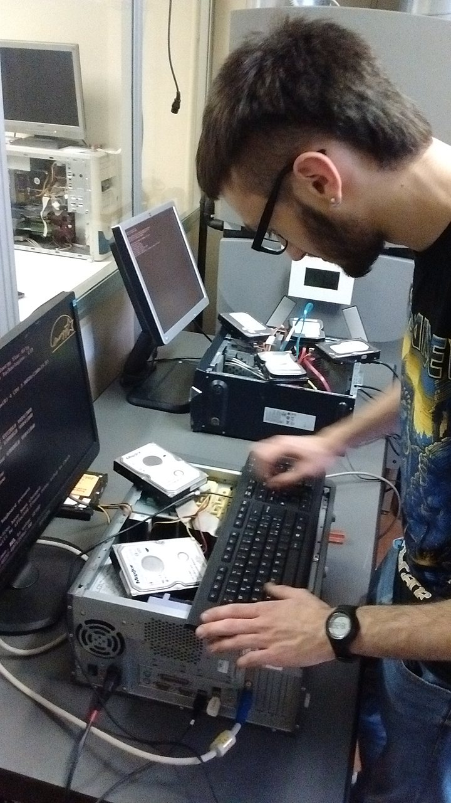
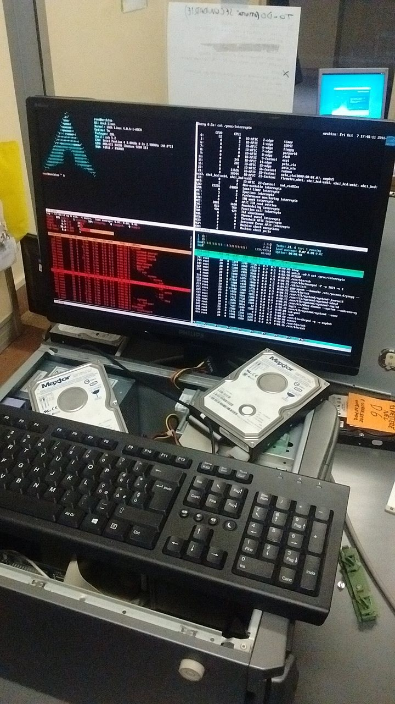
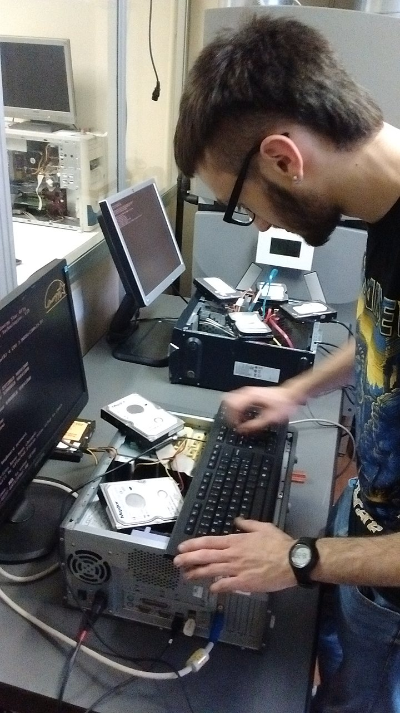
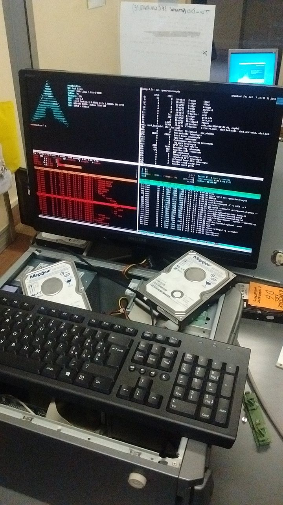

Oggi abbiamo recuperato un nuovo carico di materiale informatico dismesso dall'Area IT: alcuni computer portatili rotti da cui cercheremo di assemblarne qualcuno interamente funzionante, alcuni computer desktop obsoleti, ma soprattutto molti schermi, hard disk e banchi di RAM.
Uno dei problemi di cui ci siamo accorti in questi mesi, infatti, era la mancanza di schermi: sono più difficili da reperire in quanto meno soggetti ad obsolescenza. Uno schermo di 5 anni fa è spesso ancora perfettamente utilizzabile, mentre un computer vecchio di 5 anni di solito è giudicato troppo lento. Oggi, grazie alla disponibilità dei tecnici dell'Area IT, siamo riusciti a recuperare un buon numero di schermi, alcuni funzionanti, alcuni rotti ma probabilmente abbastanza facili da riprare tramite sostituzione di condensatori guasti o dell'inverter.
Nei computer recuperati in questi mesi, inoltre, spesso mancavano le RAM, che sono componenti che raramente si usurano ma che vanno incontro ad obsolescenza tecnologica: seguono infatti degli standard che cambiano e si evolvono nel tempo, quali ad esempio DDR, DDR2, DDR3 e DDR4; i computer prodotti oggi, in generale, utilizzano DDR4 o ancora DDR3, mentre i computer presenti nel nostro laboratorio richiedono tutti DDR o DDR2. Se anche, com'è ovvio, qualcuno già recupera i banchi di RAM dai computer che ci vengono in seguito consegnati e li utilizza in altre macchine, prima o poi dovrà comunque passare allo standard successivo e disfarsi delle vecchie RAM, che noi possiamo ancora recuperare e riutilizzarle.
Gli hard disk, essendo componenti meccanici, sono invece più soggetti ad usura: nei computer riparati in questi mesi spesso gli hard disk risultavano rotti e quelli utilizzabili iniziavano a scarseggiare. Tuttavia sono anche componenti abbastanza facili da reperire, specialmente se di piccole dimensioni (40-80 GB): Linux in generale occupa molto meno spazio su disco di altri sistemi operativi moderni, rendendo ancora utilizzabili hard disk che da molti sarebbero giudicati troppo piccoli. Oggi ne abbiamo recuperato una trentina, che abbiamo iniziato a testare per verificare che siano ancora funzionanti, e ripulire tramite sovrascrittura del contenuto in più passate, in caso fossero ancora presenti dati riservati o sensibili all'interno.
Ecco alcune foto del lavoro svolto oggi:
{kind=link}
{kind=link}